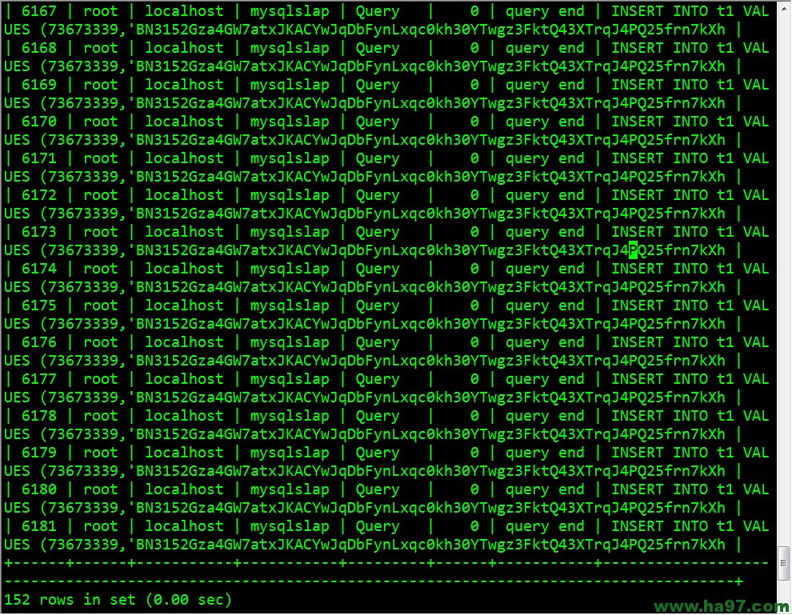

转载自:http://www.ha97.com/5182.html
PS：今天一同事问我有木有比较靠谱的mysql压力测试工具可用。其实mysql自带就有一个叫mysqlslap的压力测试工具，还是模拟的不错的。
下面举例说说。mysqlslap是从5.1.4版开始的一个MySQL官方提供的压力测试工具。通过模拟多个并发客户端访问MySQL来执行压力测试，
同时详细的提供了“高负荷攻击MySQL”的数据性能报告。并且能很好的对比多个存储引擎在相同环境下的并发压力性能差别。
通过mysqlslap –help可以获得可用的选项，这里列一些主要的参数，更详细的说明参考官方手册。
如果是系统自带或者使用rpm包安装的mysql，安装了MySQL-client端的包就有mysqlslap这个工具。
下图是运行mysqlslap -a -c 500 -i 10 -uroot -p123456测试时mysql的连接进程数：

使用语法如下：
# mysqlslap [options]常用参数 [options] 详细说明：
--auto-generate-sql, -a 自动生成测试表和数据，表示用mysqlslap工具自己生成的SQL脚本来测试并发压力。
--auto-generate-sql-load-type=type 测试语句的类型。代表要测试的环境是读操作还是写操作还是两者混合的。
取值包括：read，key，write，update和mixed(默认)。
--auto-generate-sql-add-auto-increment 代表对生成的表自动添加auto_increment列，从5.1.18版本开始支持。
--number-char-cols=N, -x N 自动生成的测试表中包含多少个字符类型的列，默认1
--number-int-cols=N, -y N 自动生成的测试表中包含多少个数字类型的列，默认1
--number-of-queries=N 总的测试查询次数(并发客户数×每客户查询次数)
--query=name,-q 使用自定义脚本执行测试，例如可以调用自定义的一个存储过程或者sql语句来执行测试。
--create-schema 代表自定义的测试库名称，测试的schema，MySQL中schema也就是database。
--commint=N 多少条DML后提交一次。
--compress, -C 如果服务器和客户端支持都压缩，则压缩信息传递。
--concurrency=N, -c N 表示并发量，也就是模拟多少个客户端同时执行select。可指定多个值，以逗号或者--delimiter参数指定的值做为分隔符。
例如：--concurrency=100,200,500。
--engine=engine_name, -e engine_name 代表要测试的引擎，可以有多个，用分隔符隔开。例如：--engines=myisam,innodb。
--iterations=N, -i N 测试执行的迭代次数，代表要在不同并发环境下，各自运行测试多少次。
--only-print 只打印测试语句而不实际执行。
--detach=N 执行N条语句后断开重连。
--debug-info, -T 打印内存和CPU的相关信息。说明：
测试的过程需要生成测试表，插入测试数据，这个mysqlslap可以自动生成，默认生成一个mysqlslap的schema，如果已经存在则先删除。
可以用--only-print来打印实际的测试过程，整个测试完成后不会在数据库中留下痕迹。
各种测试参数实例（-p后面跟的是mysql的root密码）：
单线程测试。测试做了什么。
# mysqlslap -a -uroot -p123456多线程测试。使用–concurrency来模拟并发连接。
# mysqlslap -a -c 100 -uroot -p123456
迭代测试。用于需要多次执行测试得到平均值。
# mysqlslap -a -i 10 -uroot -p123456
# mysqlslap ---auto-generate-sql-add-autoincrement -a -uroot -p123456
# mysqlslap -a --auto-generate-sql-load-type=read -uroot -p123456
# mysqlslap -a --auto-generate-secondary-indexes=3 -uroot -p123456
# mysqlslap -a --auto-generate-sql-write-number=1000 -uroot -p123456
# mysqlslap --create-schema world -q "select count(*) from City" -uroot -p123456
# mysqlslap -a -e innodb -uroot -p123456
# mysqlslap -a --number-of-queries=10 -uroot -p123456测试同时不同的存储引擎的性能进行对比：
# mysqlslap -a --concurrency=50,100 --number-of-queries 1000 --iterations=5 --engine=myisam,innodb --debug-info -uroot -p123456执行一次测试，分别50和100个并发，执行1000次总查询：
# mysqlslap -a --concurrency=50,100 --number-of-queries 1000 --debug-info -uroot -p12345650和100个并发分别得到一次测试结果(Benchmark)，并发数越多，执行完所有查询的时间越长。为了准确起见，可以多迭代测试几次:
# mysqlslap -a --concurrency=50,100 --number-of-queries 1000 --iterations=5 --debug-info -uroot -p123456